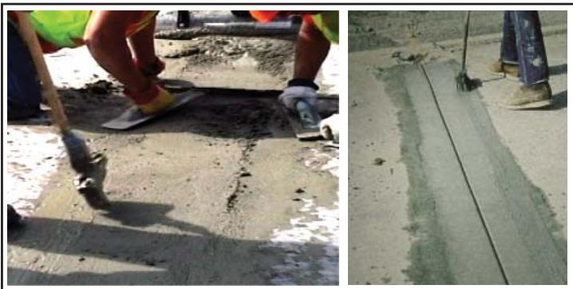
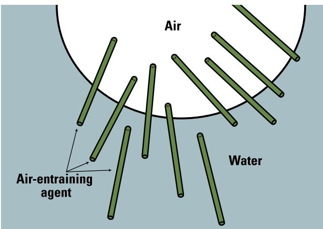
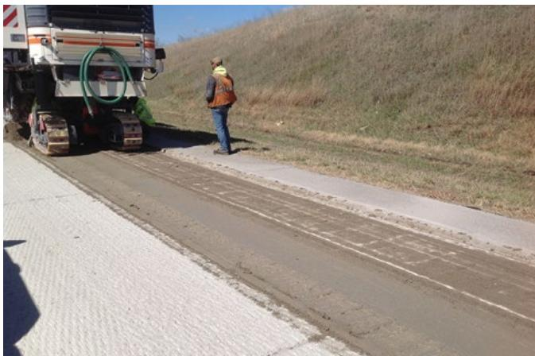

EOT Concrete Repair Mix Design
The EOT Concrete Repair Mix Design is a low‑slump, air‑entrained Portland‑cement concrete blend formulated to set rapidly and achieve high early compressive strength [1][2][3]. It relies on a rapid‑setting binder such as Class A modified cement or fast‑setting Type III cement, elevated cement dosages (≈675–850 lb/yd³), a water‑to‑cement ratio not exceeding about 0.44, and admixtures—including accelerators and high‑range reducers—to develop strengths of roughly 1,600–3,000 psi within a few hours [1][5][8]. The fresh mix is kept at an air content of 4.5–7.5 % and a slump between 2 and 4 in., while the aggregate skeleton uses small, durable coarse aggregate (≤½ in.) to provide workability and load‑bearing capacity [1][2][3]. This combination enables repaired pavement sections to be reopened to traffic shortly after placement, restoring load‑carrying capability while minimizing lane‑closure time [1][3][5].
Sources (8)
Material purpose and applicability
The EOT Concrete Repair Mix Design is a low‑slump, air‑entrained Portland cement concrete blend formulated to provide rapid set and high early strength. The guides describe it as “Class A is a modified portland cement type to provide rapid-set and high early strength” and also as “a specially proportioned, accelerated‑strength cementitious blend—typically a low‑slump, air‑entrained Portland‑cement concrete (Type I or fast‑setting Type III) with a water‑to‑cement ratio not exceeding 0.44 and small coarse aggregate.” The mix incorporates higher cement contents, multiple admixtures, chemical accelerators and high‑range water reducers, resulting in “high early‑strength concrete achieves its specified strength (f´c) at an earlier age than normal concrete” and “high early‑strength mixes typically contain higher cement contents and multiple admixtures.” Air content is controlled (“air contents between 4.5% and 7.5% … The slump should be between 2 and 4 in.”) and the water‑cement ratio is limited to no more than 0.44 (“The material should be a low‑slump mixture of air‑entrained concrete having a w/c ratio not exceeding 0.44”). Aggregate quality is emphasized: “When a mortar is furnished, special consideration should be given to the manufacturer’s recommendation for quality of concrete aggregate,” including “pea gravel (minimum Class 2 durability)” and “small‑sized, coarse aggregate, usually no more than ½ in.”
Its primary function in the pavement system is to develop sufficient early compressive strength so that repaired sections can be opened to traffic within a few hours or even as little as one hour. The guides state that “its primary function … is to develop sufficient early compressive strength (generally 1,600–3,000 psi) within a few hours so that the patch can be opened to traffic shortly after placement, thereby quickly restoring the slab’s load‑carrying capacity, minimizing traffic disruption and safety hazards,” and similarly “the primary function … is to provide sufficient early strength so that the repaired area can safely support vehicular loads when traffic resumes, thereby quickly restoring load‑bearing capability… while minimizing lane‑closure time.” This rapid strength gain enables fast‑track paving (“In fast-track paving, using high early‑strength mixtures allows traffic to open within a few hours after concrete is placed”) and meets lane‑closure constraints while maintaining durability. [1][2][3][5][8]
[1] — Ch. 6 (p. 34); [2] — Ch. 6 (pp. 163–164); [3] — Cementiti ous 3U18 Recommended… (pp. 18–19), App. B (p. 42), Mixture Selection (pp. 17–18), Mixtures for Early Opening to … (p. 18), Properties (p. 17); [5] — Ch. 6 (pp. 132–157); [8] — Ch. 5 (p. 94), Ch. 6 (pp. 119–120), Ch. 8 (p. 163)
Early‑opening concrete repair mix designs are most suitable for partial‑depth spall patches that rely on the surrounding pavement to carry tensile loads, so the patch only needs compressive strength at opening (about 1,600 – 1,800 psi) and can be placed in climates without severe freeze‑thaw cycles or extreme temperature swings. Early‑opening‑to‑traffic (EOT) concrete mixes are most appropriate for full‑depth pavement repairs where the lane‑closure time is limited and an opening within a few hours to a few days is required; they achieve the needed early strength by using high cement contents, low water‑to‑cement ratios, chemical accelerators and high‑range water reducers. The mix should contain 4.5–7.5 % entrained air, adjusted for aggregate size and climate, and maintain a slump of 50–100 mm to ensure workability. When the ambient temperature is in excess of 32 °C (90 °F), it may be very difficult to place some of the very fast‑setting materials because they harden so quickly, prompting the use of slower‑setting blends. When repairs involve full‑depth sections, higher traffic stresses, or exposure to harsh freeze‑thaw conditions, thermal incompatibility, or other extreme climatic factors beyond the repair mix’s capability, a higher‑strength concrete or an alternative repair material should be selected. Conversely, when longer closure times are available or cost constraints dominate, the guideline is to select the least exotic material—typically a conventional Portland cement concrete mix with an appropriate accelerator—rather than specialty cements or proprietary rapid‑set products, which are reserved for very short work windows or partial‑depth repairs. [3][8]
The following figure illustrates the proper placement technique for grout during a partial-depth repair.

Placement of grout at edge of partial-depth repair [3]The figure shows workers using hand tools to place and finish a fresh concrete mixture into an excavated section of pavement.
[3] — Properties (p. 17); [8] — Ch. 6 (pp. 119–120)
Composition and characteristics
The early‑opening concrete repair mix is a low‑slump, air‑entrained Portland‑cement concrete that incorporates a rapid‑setting binder and a durable aggregate system to deliver high early compressive strength. The binder may be a modified Portland cement (Class A), a Class M blend accelerated with calcium chloride (Class B), Type III cement, fast‑setting Type II cement, Type I cement, or hydraulic non‑Portland cements such as calcium sulfoaluminate/CSA, used at a relatively high dosage—typically 675–850 lb per cubic yard (up to eight bags per cubic yard, about 446 kg/m³, or five to seven bags per m³, up to ~530 kg/m³). The water‑to‑cement ratio is kept low, not exceeding 0.44–0.45 (often around 0.35–0.45), and the mix includes a high‑range water reducer together with accelerating admixtures; calcium chloride may be employed as an accelerator in Class B mixes. Air‑entraining agents provide 4.5 %–7.5 % entrained air (approximately 6 %). The aggregate blend uses quality concrete aggregate—pea gravel of at least Class 2 durability or crushed carbonate stone chips—graded so that all particles pass the 3/8 in. sieve, with coarse aggregate limited to about one‑half inch (≈9.5 mm) maximum size and often equal in weight to sand. The fresh mix is placed with a slump of 1 in for very rapid‑set mixes or 2–4 in (50–100 mm) for general placement, while higher mixing or curing temperatures and insulation may be used to retain heat of hydration. The resulting material develops early compressive strengths in the 1,600–3,000 psi range (partial‑depth patches to full‑depth repairs), exhibits minimal drying shrinkage, a compatible coefficient of thermal expansion, strong bond performance, and freeze‑thaw durability, allowing traffic to be reopened shortly after placement. [1][2][3][5][7][8]
The role of these additives in the mix design is illustrated in the following figure.

Stabilization of air voids by air-entraining admixture molecules [2]The figure depicts a schematic interface between an “Air” bubble and surrounding “Water,” where rod-shaped molecules labeled as the “Air-entraining agent” are positioned at the boundary. These molecules stabilize air voids, which act as pressurerelief valves to improve concrete freeze-thaw resistance by providing space for water/ice expansion.
[1] — Ch. 6 (p. 34); [2] — Ch. 6 (pp. 163–164); [3] — Cementiti ous 3U18 Recommended… (pp. 18–19), App. B (p. 42), Mixture Selection (pp. 17–18), Mixtures for Early Opening to … (p. 18), Properties (p. 17); [5] — Ch. 5 (pp. 105–106), Ch. 6 (pp. 132–140), Ch. 8 (pp. 190–191); [7] — Ch. 6 (pp. 59–60); [8] — Ch. 5 (pp. 94–96), Ch. 6 (pp. 119–120)
Variations in cement chemistry are the primary lever for early‑opening repair performance. The guides note that “Class A is a modified portland cement type to provide rapid-set and high early strength” and that “Type III cement” is commonly selected for fast setting, while “For faster setting materials such as Type II (HE) cements, patches can be opened as soon as the material can withstand loads without plastic deformation.” Conversely, “Long‑lasting, durable repairs have been created using portland cement‑based products,” and when opening times under twelve hours are required “often proprietary cementitious- or polymeric-based materials are used.”
Increasing cement dosage and lowering the water‑to‑cement ratio accelerate strength gain but introduce trade‑offs. The sources state that “High cement content (675 to 850 lb/yd³)” and “Low w/cm ratio (0.37 to 0.45 by mass)” boost early compressive strength, yet “high early‑strength mixes typically contain higher cement contents and multiple admixtures” and “it is not uncommon for them to experience increased shrinkage, altered microstructure, and unexpected interactions.” The durability implication is captured in the observation that “The composition of modern cements is such that they gain higher strengths earlier, but they have a lower long‑term strength gain; this may affect the long‑term durability of the concrete.”
Aggregate quality and provenance also dictate repaired‑area properties. The guides require that “When a mortar is furnished, special consideration should be given to the manufacturer’s recommendation for quality of concrete aggregate,” specifying “use of pea gravel (minimum Class 2 durability)” and “For coarse aggregate, use crushed carbonate stone chips or pea gravel meeting the requirements of Iowa DOT Specification Section 4112.”
Air entrainment and slump control are essential to retain workability while achieving early strength. The consensus is that “The material should be a low‑slump mixture of air‑entrained concrete having a w/c ratio not exceeding 0.44,” with recommended air contents of “between 4.5% and 7.5%” and a slump “between 2 and 4 in.”
Processing factors such as mix temperature, insulating blankets, and accelerators further modify setting behavior. The literature notes that “Higher freshly mixed concrete temperature” and the use of “accelerating admixtures” speed early stiffness, while “Some agencies have successfully placed overlays with higher amounts of Type I cement to accomplish quicker strength gain.” However, rapid‑setting mixes can be susceptible to durability issues: “Materials with rapid strength gain characteristics may be particularly susceptible to durability problems because of the accelerated nature of the material and the reduced curing times.”
Finally, the microstructural mismatch between repair and existing pavement influences bond performance. It is observed that “patch mixtures will have a different microstructure than that of the concrete pavement to which the repair material must bond, with different shrinkages and unexpected interactions that can lead to de‑bonding or other failures,” and that a mix “closer to the existing concrete in terms of shrinkage, stiffness, and coefficient of thermal expansion” improves long‑term service life. [1][2][3][4][5][7][8]
[1] — Ch. 6 (p. 34); [2] — Ch. 6 (pp. 163–164); [3] — Cementiti ous 3U18 Recommended… (pp. 18–19), App. B (p. 42), Mixture Selection (pp. 17–18), Mixtures for Early Opening to … (p. 18), Properties (p. 17), Repair Material Mixing (p. 26); [4] — Ch. 6 (pp. 68–69); [5] — Ch. 5 (pp. 105–106), Ch. 6 (pp. 132–140), Ch. 8 (pp. 190–191); [7] — Ch. 6 (pp. 59–60); [8] — Ch. 5 (pp. 94–96), Ch. 6 (pp. 119–120), Ch. 8 (p. 164)
Key material properties
The early‑opening concrete repair mix must provide rapid set and high early strength, which is achieved with “Class A is a modified portland cement type to provide rapid‑set and high early strength” or a “high early strength mix (five‑hour)”. Mechanical performance is defined by the need for early compressive strength – “High early‑strength concrete achieves its specified strength (f´c) at an earlier age than normal concrete” and “the minimum patch strength required to carry traffic without experiencing damage is lower (typically, 1,600 to 1,800 psi) than that required for a conventional full‑depth repair concrete mixture (typically, 3,000 psi or higher)” – as well as early flexural capacity (“early compressive strength sufficient for traffic loads”, “Flexural capacity and durability are likewise important”). Bond strength requirements are expressed as “high bond strength at both 1‑day (≈1,000 lbf/in²) and 7‑day (≈1,500 lbf/in²)”.
Physical attributes include low workability limits – “low‑slump mixture of air‑entrained concrete having a w/c ratio not exceeding 0.44”, “Maximum 1 in. slump (measured after allowing to set 5 minutes after mixing)”, “The slump should be between 50 and 100 mm (2 to 4 in) for overall workability and finishability” – and sufficient entrained air – “6.5 percent air” and “the concrete mix should have between 4.5 and 7.5 percent entrained air”. Aggregate quality is emphasized: “When a mortar is furnished, special consideration should be given to the manufacturer’s recommendation for quality of concrete aggregate”, “This also includes use of pea gravel (minimum Class 2 durability) meeting the requirements of Iowa DOT Specification Section 4112”, and “small‑sized, coarse aggregate, usually no more than ½ in.” Physical durability factors such as low permeability and early stiffening are noted (“permeability, early stiffening, autogenous shrinkage, drying shrinkage, temperature rise”).
Chemical control is provided by cement type and content – “Class A is a modified portland cement type to provide rapid‑set and high early strength”, “use Class M mix with calcium chloride (no fly ash)”, “Type I portland cement … more widely used”, and “higher cementitious materials content and admixtures, particularly accelerators”. Water‑to‑cement ratio limits are repeated: “Low w/c ratio (0.37 to 0.45 by mass)”, “Target w/c ratio 0.35”, and “low water‑to‑cement ratio (≤0.45) combined with adequate aggregate content promotes rapid strength gain without sacrificing long‑term performance”. Accelerators and set‑reducing admixtures are required – “Place concrete within 30 minutes after introduction of calcium chloride”, “adding a chemical accelerator”, and “appropriate admixtures (set accelerators, air‑entraining agents) support early strength development.”
Thermal considerations include compatibility with the existing pavement: “coefficient of thermal expansion (CTE) compatible with the existing pavement”, “shrinkage characteristics and coefficient of thermal expansion”, and “thermal compatibility with the surrounding concrete (e.g., similar coefficients of thermal expansion)”. Shrinkage control is highlighted – “low drying shrinkage”, “little or no shrinkage”, “autogenous shrinkage, drying shrinkage”. Heat evolution must be managed – “Higher freshly mixed concrete temperature”, “low heat of hydration”, and freeze‑thaw durability – “air entrainment … helps mitigate freeze–thaw damage”, “freeze‑thaw durability”.
Thus the mix design must balance rapid strength gain with controlled shrinkage, compatible thermal movement, adequate workability, air content, aggregate durability, low w/c ratio, and appropriate cement chemistry and accelerators. [1][2][3][5][7][8]
[1] — Ch. 6 (p. 34); [2] — Ch. 6 (pp. 163–164); [3] — Cementiti ous 3U18 Recommended… (pp. 18–19), App. B (p. 42), Mixture Selection (pp. 17–18), Mixtures (p. 16), Mixtures for Early Opening to … (p. 18), Properties (p. 17); [5] — Ch. 5 (pp. 105–106), Ch. 6 (pp. 132–157), Ch. 8 (pp. 190–191); [7] — Ch. 6 (pp. 59–60); [8] — Ch. 5 (pp. 94–96), Ch. 6 (pp. 119–123), Ch. 8 (pp. 163–164)
The properties of early‑opening concrete repair mixes are first classified by material type and performance class. The guides note that “Repair materials for partial‑depth repairs are generally classified into three categories: cementitious, polymeric, and bituminous.” In addition, the cement component is placed in a performance class; for example, “Class A is a modified Portland cement type to provide rapid‑set and high early strength” while “Class B denotes a high early strength mix (five‑hour) meeting the requirements of IM 529”. These class designations serve as the primary means of characterizing the mix’s early‑strength capability.
Fresh‑state properties are measured with standard workability and air‑entrainment tests. All sources require a low‑slump, air‑entrained concrete: “low‑slump mixture of air‑entrained concrete having a w/c ratio not exceeding 0.44” and the slump must be limited – “Maximum 1 in. slump (measured after allowing to set 5 minutes after mixing)”; other guidance specifies “The slump should be between 2 and 4 in.” and “The slump should be between 50 and 100 mm (2 to 4 in) for overall workability and finishability.” Acceptable air content is also defined: “air contents between 4.5% and 7.5% are recommended”.
Hardened‑state performance is quantified through a suite of strength, bond, durability, and dimensional‑stability tests. Early‑opening strength is the most widely used selection criterion – “early‑opening strength requirement (e.g., 3,000 psi compressive or greater)” – with typical values reported as “typical compressive strength values range from 2,000 to 3,000 lbf/in2” and “a range of 13.8 to 20.7 MPa (2,000 to 3,000 lbf/in²) compressive strength.” Flexural capacity is likewise specified: “flexural strength values (third‑point loading) range from 350 to 500 lbf/in2” and “2.0 to 2.8 MPa (290 to 400 lbf/in²) flexural strength.” Bond quality is measured by slant‑shear testing – “bond quality is measured by slant‑shear testing per ASTM C882 … 1‑day and 7‑day thresholds of about 1,000 lbf/in² and 1,500 lbf/in²” – and tensile pull‑off methods: “To evaluate the tensile bond strength, ASTM C1583.” Freeze‑thaw resistance is verified with standard durability testing: “freeze‑thaw durability is evaluated with ASTM C666.” Additional hardened‑state characterizations include shrinkage potential and coefficient of thermal expansion to ensure dimensional compatibility.
Field monitoring of early strength development often employs non‑destructive or predictive methods. The maturity method is highlighted as a tool for in‑place verification – “The maturity method has been successfully applied to monitor and verify the in‑place strength of concrete overlays.” Laboratory calorimetry can be used to compare mix designs: “Semi‑adiabatic calorimetry tests can help engineers evaluate different SCM, cement, and admixture combinations with early setting time and strength gain properties.” [1][3][5][7][8]
[1] — Ch. 6 (p. 34); [3] — Cementiti ous 3U18 Recommended… (pp. 18–19), App. B (p. 42), Mixture Selection (pp. 17–18), Properties (p. 17), Repair Material Mixing (p. 26); [5] — Ch. 5 (pp. 105–106), Ch. 6 (pp. 132–157), Ch. 8 (pp. 190–191); [7] — Ch. 6 (pp. 59–60); [8] — Ch. 5 (pp. 94–102), Ch. 6 (pp. 119–123), Ch. 8 (p. 163)
Behavior and mechanisms
The early‑opening repair patch is confined by the surrounding slab and therefore “partial-depth patch experiences compression only.” Consequently, the design relies on compressive strength; “the minimum patch strength required to carry traffic without experiencing damage is lower (typically, 1,600 to 1,800 psi)” while many specifications cite “Typical compressive strength values range from 2,000 to 3,000 lbf/in2” as the usual early‑strength target. When using a lower early‑opening strength patch mixture (e.g., 1,800 psi), a determination should be made of the equivalent single axle loads (ESALs) the patch will carry before it reaches its “full” strength. If the developed strength is insufficient, “"socketing" of the dowel bar and ultimately poor load transfer performance” can occur, leading to loss of load transfer.
Moisture control is critical. The guides state that “Moisture retention and temperature management during the curing period are critical to the ultimate strength of the concrete,” and that “as soon as the bleed water has disappeared from the surface of the concrete pavement (typically within about a half hour of concrete placement), the approved curing procedure should commence.” Because “drying shrinkage of many repair materials is greater than normal concrete” (and “Drying shrinkage of most repair materials is greater than normal concrete, and when the material restrained can induce a tensile stress as high as 6,900 kPa (1,000 lbf/in²)”), controlling water content – “One of the most important factors to control is the water content of the patching material in order to reduce the probability of shrinkage cracks and debonding” – is essential to prevent cracking.
Temperature variations affect both hydration and compatibility with the existing pavement. The mixes are intended for “thermal compatibility with the surrounding concrete (e.g., similar coefficients of thermal expansion)” but “Differential expansion due to differences in the CTE between the repair material and the surrounding concrete can also be detrimental.” Adverse conditions such as high ambient heat or rapid cooling after insulation removal can cause failure: “Temperature during installation and curing should also be closely monitored because adverse temperature conditions at the time of placement have been linked to premature failures,” and “the rapid cooling of the pavement surface following the removal of the insulation blanket can lead to cracking of the repair slabs.” Insulating layers may be employed to retain heat – “Insulating layers can be used to retain the heat of hydration and reduce curing time” – and early traffic loading has been shown to assist joint activation: “Early traffic loading has been shown to assist with joint activation in concrete overlays.”
Freeze‑thaw exposure and chemical attack are major durability concerns. Multiple sources note that “freeze‑thaw durability of many materials is unacceptable, especially under severe exposure conditions,” and recommend testing – “tested for freeze‑thaw durability to ensure long‑term performance.” When deicing chemicals are present, “consideration should be given to the durability requirements of the hardened concrete, which is largely a function of the exposure to freeze‑thaw conditions and deicing chemicals.”
Overall service performance depends on achieving rapid strength gain while maintaining bond and compatibility. The repair must “form a strong bond to the existing concrete substrate” and “ability to rapidly develop sufficient strength to carry the required load so that traffic can be allowed on the pavement at the specified time.” Installation must follow the product guidance – “manufacturer’s directions should be closely followed when installing these products and in determining appropriate application conditions (moisture and temperature).” When properly managed, early opening promotes uniform joint activation and long‑term interlock; inadequate control of moisture, temperature, shrinkage, or freeze‑thaw exposure can lead to cracking, debonding, or loss of load transfer. [3][5][7][8]
The following figure illustrates the finishing and curing process for such an overlay repair.

Finishing and curing of a concrete overlay repair [7]The image displays a large paving machine laying down a fresh layer of concrete on an existing pavement surface. A worker in safety gear stands nearby, observing the installation process as the material is placed.
[3] — Cementiti ous 3U18 Recommended… (pp. 18–19), App. B (p. 42), Properties (p. 17); [5] — Ch. 5 (pp. 105–106), Ch. 6 (pp. 132–149), Ch. 8 (pp. 190–191); [7] — Ch. 6 (pp. 59–60); [8] — Ch. 5 (pp. 94–96), Ch. 6 (pp. 122–123), Ch. 8 (pp. 163–164)
The early‑opening performance of repair concrete is governed by intertwined physical, chemical, and mechanical mechanisms. Chemically, rapid cement hydration is achieved through accelerated binders—such as modified Portland cements, Type III or fast‑setting Type II (HE) cements, calcium chloride, calcium sulfoaluminate binders, and proprietary high‑early‑strength blends—and by increasing cement dosage while reducing the water‑to‑cement ratio. The guides note that “the chemistry of cement hydration, which is accelerated by using faster‑setting Type II (HE) cements or high‑early‑strength proprietary blends and limited to a water‑cement ratio not exceeding 0.44” and that “Class A is a modified portland cement type to provide rapid‑set and high early strength.” High‑range water reducers are added to retain workability at low w/c ratios, as reflected in “Low w/cm ratio (0.37 to 0.45 by mass)” and “air‑entrained concrete having a w/c ratio not exceeding 0.44.” Multiple admixtures, including accelerators, further speed set: “Use Class M mix with calcium chloride (no fly ash)” and “Such mixtures contain higher cementitious materials content and admixtures, particularly accelerators.”
Physically, the aggregate skeleton and moisture‑related phenomena control dimensional stability. Durable coarse aggregates meeting minimum durability classes—“use of pea gravel (minimum Class 2 durability) …” or “crushed carbonate stone chips or pea gravel meeting the requirements of Iowa DOT Specification Section 4112”—provide load‑bearing capacity, while aggregate size is limited to “small‑sized, coarse aggregate, usually no more than ½ in.” Low water content and appropriate air entrainment (“air contents between 4.5% and 7.5% are recommended, with a maximum w/cm ratio of 0.45”) limit shrinkage, yet drying shrinkage remains a concern: “Drying shrinkage of most repair materials is greater than normal concrete and, when the material is restrained, can induce a tensile stress as high as 6,900 kPa (1,000 psi).” Differential thermal expansion also generates tensile stresses (“shrinkage and differential thermal expansion (CTE mismatch) generate tensile stresses that can weaken the bond”). Curing practices such as insulation blankets and curing compounds manage temperature gradients and moisture loss, supporting rapid strength gain.
Mechanically, the mix must develop early compressive and flexural strengths sufficient to resist traffic loads and maintain bond integrity. The required early‑strength thresholds are cited as “recommended 1- and 7-day performance requirements of 1,000 lbf/in² and 1,500 lbf/in²” and “results in an 18± hour opening strength of 3,000 psi.” Adequate stiffness is needed to avoid plastic deformation (“the mix must develop sufficient stiffness to resist plastic deformation”) and to support dowel‑bar bearing stresses. Proper proportioning, mixing, placement, and curing—“when properly proportioned, mixed, placed, and cured”—ensure that the aggregate framework provides the primary structural skeleton for early load transfer. [1][2][3][5][7][8]
The following figure illustrates the relationship between these mechanical properties by comparing compressive and flexural strength correlations.
 Comparison of compressive and flexural strength correlations, based on equations 3.1 and 3.2 [2]
Comparison of compressive and flexural strength correlations, based on equations 3.1 and 3.2 [2]
The figure plots two linear trends representing the relationship between concrete compressive strength and flexural strength. One trend follows a square root correlation while the other follows a power function, with the text noting that b = 2.3 for lb/in² (exact coefficient must be determined for specific mix).
[1] — Ch. 6 (p. 34); [2] — Ch. 6 (pp. 163–164); [3] — Cementiti ous 3U18 Recommended… (pp. 18–19), App. B (p. 42), Mixture Selection (pp. 17–18), Mixtures for Early Opening to … (p. 18), Properties (p. 17); [5] — Ch. 5 (pp. 105–106), Ch. 6 (pp. 132–149), Ch. 8 (pp. 190–191); [7] — Ch. 6 (pp. 59–60); [8] — Ch. 5 (pp. 94–102), Ch. 6 (pp. 119–123), Ch. 8 (pp. 163–164)
Durability and deterioration
The durability of early‑opening repair mixes is challenged by a set of interrelated mechanisms. Drying shrinkage of most repair materials is greater than normal concrete, and when the material is restrained can induce a tensile stress as high as 6,900 kPa (1,000 lbf/in²). This high stress promotes cracking and loss of bond. Differential expansion between the repair material and the surrounding concrete can also be detrimental. Such thermal mismatch adds further tensile forces at the interface. In certain environmental regions, freeze‑thaw durability is an important property of the repair material. Because many early‑strength patches have limited entrained air, they are vulnerable to freeze‑thaw damage. High early‑strength formulations also generate rapid heat evolution and a microstructure that differs from the existing concrete, increasing permeability and susceptibility to spalling, debonding, traffic‑induced joint displacement, and dowel‑bar bearing stresses. Consequently, mix designs must limit shrinkage, ensure thermal compatibility, provide adequate air voids, control cement content, and employ proper curing to mitigate these durability concerns. [2][3][4][5][7][8]
The following figure illustrates compression relief failure in a Type 1 partial-depth crack repair.
Compression relief failure of (Type 1) partial-depth crack repair on a city street [3]
The image displays a close-up view of a concrete pavement surface where a longitudinal joint or crack has been subjected to vertical displacement. A metal tool with a dark, wrapped handle is positioned vertically across the seam, likely used for measuring the height difference between the adjacent slabs.
[2] — Ch. 6 (pp. 163–164); [3] — Cementiti ous 3U18 Recommended… (pp. 18–19), Mixtures (p. 16), Properties (p. 17); [4] — Ch. 6 (pp. 68–69); [5] — Ch. 5 (pp. 105–106), Ch. 6 (pp. 132–149), Ch. 8 (pp. 190–191); [7] — Ch. 6 (pp. 59–60); [8] — Ch. 5 (p. 96), Ch. 6 (pp. 119–123), Ch. 8 (pp. 163–164)
Material characteristics that increase the susceptibility of early‑opening concrete repairs to deterioration are repeatedly identified across the guides. High drying shrinkage is highlighted: “Drying shrinkage of most repair materials is greater than normal concrete and, when the material is restrained, can induce a tensile stress as high as 6,900 kPa (1,000 psi)” and similarly “The drying shrinkage of many repair materials is greater than normal concrete, and when the material is restrained, it can increase tensile stresses.” Poor freeze‑thaw durability is noted: “freeze‑thaw durability of many of them is unacceptable, especially under severe exposure conditions” and “freeze‑thaw durability … many materials is unacceptable, especially under severe exposure conditions.” Rapid strength gain or accelerated setting also raises risk: “Materials with rapid strength‑gain characteristics may be particularly susceptible to durability problems because of the accelerated nature of the material and the reduced curing times,” and “accelerated or rapid hardening mixtures may undergo more shrinkage and more rapid heat generation than conventional mixtures, which could lead to adverse effects.” Thermal incompatibility or mismatched coefficient of thermal expansion is cited: “Thermal incompatibility between the repair material and the pavement” and “shrinkage characteristics and coefficient of thermal expansion of the material.” High early‑opening strength requirements that demand higher cement and admixture levels increase potential failure: “In general, the higher the early-opening strength requirement (e.g., 3,000 psi compressive or greater), the higher and/or more complex the cement and admixture content will be, and thus the greater the potential for failure,” and “Because these early strength mixes typically contain higher cement contents and multiple admixtures, it is not uncommon for them to experience increased shrinkage, altered microstructure, and unexpected interactions.” Excess water or high w/c ratios are warned against: “One of the most important factors to control is the water content of the patching material in order to reduce the probability of shrinkage cracks and debonding” and “Careful observation of mixing times and water content for prepackaged rapid setting materials is important because of the quick setting nature of the materials.” Low‑quality or insufficiently durable aggregate also raises risk: “When a mortar is furnished, special consideration should be given to the manufacturer’s recommendation for quality of concrete aggregate,” and “This also includes use of pea gravel (minimum Class 2 durability) meeting the requirements of Iowa DOT Specification Section 4112.” Exposure conditions that exacerbate deterioration include freeze‑thaw cycles with deicing chemicals, ambient temperatures above 90 °F accelerating set (“When the ambient temperature is in excess of 90°F, it may be very difficult to place some of the rapidsetting materials because they set so quickly”), rapid temperature differentials during early traffic loading, moisture loss during cure (“Moisture retention and temperature management during the curing period are critical to the ultimate strength of the concrete.”), heavy dowel‑bar bearing in thin, long repairs, traffic “pinch” at joints (“Traffic is often a contributing factor, as joint displacement can “pinch” the concrete at the surface and dislodge concrete weakened by other factors.”), infiltration of incompressible material into joints, poor slab consolidation, localized weak zones, corrosion of reinforcement, and joint inserts that trap moisture (“Poor concrete consolidation, localized areas of weak concrete, corrosion of reinforcing steel, and the use of joint inserts also contribute to the formation of surface distress”). Conversely, characteristics that reduce susceptibility are also consistently emphasized. Low shrinkage mixes (“little or no shrinkage”) and low water‑cement ratios (≤0.45) with adequate air entrainment (“air contents between 4.5% and 7.5% are recommended, with a maximum w/cm ratio of 0.45”) improve durability. Thermally compatible mixes mitigate differential movement by avoiding the “Thermal incompatibility …” condition. Proven freeze‑thaw resistance is advised (“tested for freeze‑thaw durability to ensure long-term performance”). High‑quality aggregates and hard aggregate that resist wear are recommended (“hard aggregate so it can better resist wear”). Strong bonding to the existing substrate and ability to bridge joints or cracks further protect repairs: “form a strong bond to the existing concrete substrate” and “ability to bridge joints or cracks.” Proper curing practices, including moisture retention, use of appropriate curing compounds, and controlled temperature, are essential (“Moisture retention and temperature management during the curing period are critical…”, “a solvent-based curing compound … was more effective than two water‑based curing compounds”). Adequate overlay thickness and support, limiting traffic loads until sufficient strength is achieved, and early joint activation through controlled loading improve aggregate interlock and reduce movement (“Early traffic loading has been shown to assist with joint activation in concrete overlays”, “Early activation of a greater number of joints leads to a smaller amount of movement and contributes to better long-term aggregate interlock and joint alignment”). Use of Portland cement‑based products for standard openings or polymeric/cementitious systems for rapid opening also enhances durability (“Long-lasting, durable repairs have been created using portland cement-based products”, “if the required time to opening is less than 12 hours, often proprietary cementitious- or polymeric-based materials are used”). [1][3][4][5][7][8]
The following figure illustrates how the degree of saturation influences stiffness degradation resulting from freeze-thaw damage.
 Influence of the DOS on stiffness degradation due to freeze-thaw damage [1]
Influence of the DOS on stiffness degradation due to freeze-thaw damage [1]
The figure plots relative stiffness against the degree of saturation, showing that material properties remain stable until a critical threshold is reached. Once the concrete reaches this critical state, freeze-thaw damage initiates and causes rapid degradation in stiffness regardless of air content levels.
[1] — Ch. 6 (p. 34); [3] — Cementiti ous 3U18 Recommended… (pp. 18–19), App. B (p. 42), Properties (p. 17); [4] — Ch. 6 (pp. 68–69); [5] — Ch. 5 (pp. 105–106), Ch. 6 (pp. 132–149), Ch. 8 (pp. 190–191); [7] — Ch. 6 (pp. 59–60); [8] — Ch. 5 (pp. 96–102), Ch. 6 (pp. 119–123), Ch. 8 (p. 163)
Material interactions and compatibility
The early‑opening repair mixes rely on chemical and physical compatibility between the cementitious binder, any accelerators, and the selected aggregates. As one guide states, “Class A is a modified portland cement type to provide rapid-set and high early strength,” while another notes that “high-quality portland cement concrete—specifi - cally, one that uses Type I, II, and III cements” is recommended for repair applications. Aggregate quality is repeatedly emphasized: “When a mortar is furnished, special consideration should be given to the manufacturer’s recommendation for quality of concrete aggregate,” and “This also includes use of pea gravel (minimum Class 2 durability) meeting the requirements of Iowa DOT Specification Section 4112.” Compatible coarse aggregates are specified as “crushed carbonate stone chips or pea gravel” and “The concrete mixture requires the use of small-sized, coarse aggregate, usually no more than ½ in.”
Accelerators such as calcium chloride impose timing constraints: “Use Class M mix with calcium chloride (no fly ash)” and “Place concrete within 30 minutes after introduction of calcium chloride.” The interaction between accelerator‑rich mixes and the substrate is governed by shrinkage and thermal behavior. Several sources warn that “Thermal incompatibility between the repair material and the pavement” can lead to debonding, while others explain that “patch mixtures will have a diff erent microstructure than that of the concrete pavement to which the repair material must bond, with diff erent shrinkages and unexpected interactions that can lead to de‑bonding or other failures.” Matching aggregate characteristics helps control paste demand: “Both of these factors can lead to poor or weak bond development, resulting in a delaminated repair that breaks up under loading,” and “one of the most important factors to control is the water content of the patching material to reduce the probability of shrinkage cracks and debonding.”
Mix proportions are directed toward low‑slump, air‑entrained concrete with limited water: “low-slump mixture of air-entrained concrete having a w/c ratio not exceeding 0.44” and “air contents between 4.5% and 7.5% are recommended, with a maximum w/cm ratio of 0.45.” High cement contents and multiple admixtures can increase shrinkage: “high early‑strength mixes typically contain higher cement contents and multiple admixtures,” “it is not uncommon for them to experience increased shrinkage, altered microstructure, and unexpected interactions,” and “use of high early‑strength concrete with high cement contents (on the order of 800 lb/yd3) caused excessive shrinkage cracking.” Consequently, the guides advise avoiding excessive cement: “Avoid high cement contents and Type III cement,” while still achieving rapid strength through reduced w/c, increased cement, and accelerators: “For high early strength concrete … the early strength gain is typically achieved by reducing the water to cement ratio (w/c), increasing the cement content, and by adding a chemical accelerator.”
Finally, verification of material compatibility is required: “Laboratory testing of proposed repair materials (using the aggregates that will be used in the project mix) must be conducted to ensure that opening requirements are met,” ensuring that paste demand, entrained‑air content, and early‑strength criteria are satisfied. [1][3][5][8]
[1] — Ch. 6 (p. 34); [3] — Cementiti ous 3U18 Recommended… (pp. 18–19), App. B (p. 42), Mixture Selection (pp. 17–18), Properties (p. 17); [5] — Ch. 5 (pp. 105–106), Ch. 6 (pp. 132–140), Ch. 8 (pp. 190–191); [8] — Ch. 5 (pp. 94–96), Ch. 6 (pp. 119–120), Ch. 8 (p. 164)
Across the guides, the dominant compatibility concerns for early‑opening concrete repair mixes are linked to restraint of drying shrinkage and differential thermal expansion. When restrained, the higher drying shrinkage of repair blends can generate tensile stresses up to roughly 1,000 psi (≈6,900 kPa), leading to cracking or loss of bond. A mismatch in coefficient of thermal expansion between the repair material and the existing pavement creates differential expansion that weakens the interface and may cause delamination under traffic loads. Accelerated or rapid‑hardening mixes can exacerbate these problems by producing greater shrinkage and faster heat evolution, increasing the likelihood of debonding. Ancillary components such as joint bond breakers and sealants must also be compatible; mismatches between them can undermine repair integrity. The sources do not identify sulfates, organics, clays, reactive aggregates, contaminants, dissimilar base materials, corrosion, or chemical attack as specific compatibility risks for the early‑opening mixes discussed. [3][5][7][8]
[3] — Properties (p. 17); [5] — Ch. 5 (pp. 105–106); [7] — Ch. 6 (pp. 59–60); [8] — Ch. 5 (p. 96), Ch. 6 (pp. 119–120)
Influence of production and placement
“Mixing, placement, compaction, finishing, and curing each play a decisive role in achieving the required early‑opening strength while preserving long‑term durability.” The guides note that “Mixing can be done either by hand, ready mix, or mobile concrete mixers,” but warn that “over‑mixing consumes valuable setting time and can jeopardize placement windows.” Accordingly, “Careful observation of mixing times and water content for prepackaged rapid setting materials is important because of the quick setting nature of the materials; over‑mixing consumes part of the limited setting window and leaves insufficient time for proper placement, compaction and finishing, which can degrade strength and durability.”
The mix must be a low‑slump, air‑entrained concrete with strict water‑cement limits. The guides specify that “The material should be a low‑slump mixture of air‑entrained concrete having a w/c ratio not exceeding 0.44.” A similar statement appears as “low‑slump mixture of air‑entrained concrete having a water‑cement ratio not exceeding 0.44.” For higher early strength, a “Target w/c ratio 0.35” may be used, while maintaining “6.5 percent air”. The recommended range for air content is also given: “For most mixtures, air contents between 4.5% and 7.5% are recommended, with a maximum w/cm ratio of 0.45 (ACI 2016).” Slump requirements differ; one source limits the fresh concrete to “Maximum 1 in. slump (measured after allowing to set 5 minutes after mixing)” whereas another advises that “The slump should be between 2 and 4 in. for overall placement, workability, and finishability.”
Placement must consider ambient temperature and water control. The guides caution that “When the ambient temperature is in excess of 90°F, it may be very difficult to place some of the rapid‑setting materials because they set so quickly.” They also stress that “During placement the water content must be tightly controlled to avoid excess shrinkage cracking and loss of bond with the existing concrete.” To accommodate fast setting, “Best practices for the proper placement of accelerated mixtures include using smaller panels and having a sufficient number of experienced laborers on hand and a sufficient amount of finishing equipment, curing agent, and sawing equipment to accommodate the fast expected setting time.”
Compaction and finishing must be performed promptly. The guides state that “Proper compaction and finishing are essential to avoid shrinkage differentials and debonding; inadequate compaction or delayed finishing increases the risk of premature failure.” Complementarily, they add that “Adequate compaction and finishing within the short workable period ensure that stresses do not exceed the developing compressive strength, preventing uncontrolled cracking.”
Curing governs both early strength development and long‑term durability. The guides identify “Inadequate cure time prior to opening repairs to traffic” as a leading cause of failure and recommend “maintaining adequate moisture and temperature for at least 18 hours (or using insulating blankets when faster strength gain is needed).” They further emphasize that “Moisture retention and temperature management during the curing period are critical to the ultimate strength of the concrete.” This need is heightened when accelerators are used: “Proper curing is even more important when using set‑accelerating admixtures or high early‑strength mixtures.” Effective methods include using a solvent‑based compound: “a solvent‑based curing compound (i.e., poly‑alphamethylstyrene) was more effective than two water‑based curing compounds … in providing water retention, possibly due to better surface wetting that produces fewer imperfections.” For very rapid openings, “On projects with very early opening time requirements (4 to 6 hours), it may be necessary to use insulation blankets to obtain the required strength within the available time,” and “Other practices to accelerate set times and hardening include increasing the mixture temperature, using cement mixtures without SCMs, and using insulating blankets during early curing.” The overall impact is summarized: “The curing regime directly governs both short‑term and long‑term performance; insufficient cure time prior to traffic reopening can cause premature patch failures, whereas maintaining proper moisture and temperature during the first 72 hours controls shrinkage stresses, thermal incompatibility and supports the attainment of the required early compressive strength.” Finally, the guides warn that “Materials with rapid strength‑gain characteristics may be particularly susceptible to durability problems because of the accelerated nature of the material and the reduced curing times.” [3][5][7][8]
[3] — Cementiti ous 3U18 Recommended… (pp. 18–19), Mixture Selection (pp. 17–18), Mixtures for Early Opening to … (p. 18), Properties (p. 17); [5] — Ch. 6 (pp. 132–149); [7] — Ch. 6 (pp. 59–60); [8] — Ch. 5 (pp. 94–102), Ch. 6 (pp. 119–123), Ch. 8 (p. 163)
Construction‑stage variations that dominate the long‑term performance of early‑opening repair mixes include (1) aggregate selection errors – “special consideration should be given to the manufacturer’s recommendation for quality of concrete aggregate” and the use of “use of pea gravel (minimum Class 2 durability) meeting the requirements”; (2) cementitious and admixture imbalances – “Type III cement”, “High cement content (675 to 850 lb/yd3)”, “Low w/cm ratio (0.37 to 0.45 by mass)”, “high cement factors can lead to excessive shrinkage”, “Many mixes use Type III cement and an accelerator to improve setting times and reduce shrinkage”, and, when rapid‑hardening binders are employed, “accelerated or rapid hardening mixtures may undergo more shrinkage and more rapid heat generation than conventional mixtures, which could lead to adverse effects”; (3) thermal incompatibility – “Thermal incompatibility between the repair material and the pavement.”, “Differential expansion due to differences in the CTE between the repair material and the surrounding concrete can also be detrimental.”, and “shrinkage characteristics and the CTE of the material should be considered”; (4) shrinkage and microstructure mismatches – “The drying shrinkage of many repair materials is greater than normal concrete, and when the material is restrained, it can increase tensile stresses.”, “Drying shrinkage of most repair materials is greater than normal concrete, and when the material is restrained can induce a tensile stress as high as 6,900 kPa”, “patch mixtures will have a diff erent microstructure than that of the concrete pavement to which the repair material must bond, with diff erent shrinkages and unexpected interactions that can lead to de‑bonding or other failures”, “high early‑strength concrete with high cement contents (on the order of 800 lb/yd3) caused excessive shrinkage cracking on many CRCP repairs, significantly reducing the life of the FDRs”, “it is not uncommon for them to experience increased shrinkage, altered microstructure, and unexpected interactions”, and “One of the most important factors to control is the water content of the patching material to reduce the probability of shrinkage cracks and debonding”; (5) curing and temperature management deficiencies – “Inadequate cure time prior to opening repairs to traffi c.”, “Moisture retention and temperature management during the curing period are critical to the ultimate strength of the concrete.”, “adverse temperature conditions at the time of placement have been linked to premature failures”, and “Materials with rapid strength gain characteristics may be particularly susceptible to durability problems because of the accelerated nature of the material and the reduced curing times.”; (6) joint‑related and placement defects – “infiltration of incompressible material into the joint that results in spalling as the joint closes during warmer weather”, “Poor concrete consolidation, localized areas of weak concrete, corrosion of reinforcing steel, and the use of joint inserts also contribute to the formation of surface distress”, “Traffic is often a contributing factor, as joint displacement can “pinch” the concrete at the surface and dislodge concrete weakened by other factors”, and “Incompatibility between the joint bond breaker and the joint sealant.”; (7) geometric and support issues – “overlay thickness and support structure being most important”; and (8) mixing‑time and water‑content errors – “Mixing beyond the amount of time needed for good blending reduces the already short time available for placing and finishing the material.”, “Careful observation of mixing times and water content for prepackaged rapid setting materials is important because of the quick setting nature of the materials.”. [1][2][3][4][5][7][8]
The following figure illustrates early-age cracking resulting from these construction-stage variations.
 Early-age cracking [2]
Early-age cracking [2]
The figure illustrates various distress patterns on a concrete pavement surface, including map cracking (crazing), plastic shrinkage cracks, random longitudinal and transverse cracks, corner breaks, and contraction joints.
[1] — Ch. 6 (p. 34); [2] — Ch. 6 (pp. 163–164); [3] — Cementiti ous 3U18 Recommended… (pp. 18–19), Properties (p. 17); [4] — Ch. 6 (pp. 68–69); [5] — Ch. 5 (pp. 105–106), Ch. 6 (pp. 132–149), Ch. 8 (pp. 190–191); [7] — Ch. 6 (pp. 59–60); [8] — Ch. 5 (pp. 96–102), Ch. 6 (pp. 119–123), Ch. 8 (p. 163)
Selection, specification, and improvement
The selection or specification of an early‑opening concrete repair mix is driven first and foremost by the time available before traffic can be restored. As the guides state, “Available curing time (i.e., how quickly the repair must be opened to traffic) is often the primary factor driving the selection of the repair material.” This timing requirement defines the required early‑strength performance; typical compressive strengths range from 2,000 to 3,000 psi, with full‑depth patches governed by flexural strength (≥3,000 psi) and partial‑depth patches by compressive strength (1,600–1,800 psi). The mix must achieve the target strength within the lane‑closure window – often four to twelve hours for highway work.
To meet rapid strength goals the binder system must provide rapid set and high early strength. Sources prescribe a “Class A modified Portland cement” or “Class B high early‑strength mix (five‑hour)” and frequently call for Type III cement, an accelerator such as calcium chloride (“Use Class M mix with calcium chloride (no fly ash)”), or other accelerating admixtures. The mixture is typically a low‑slump, air‑entrained concrete with a water‑to‑cement ratio not exceeding 0.44 (often as low as 0.35 for the highest early strengths), entrained air between 4.5 % and 7.5 % (≈6 %), and small coarse aggregate (≤½ in., max 9.5 mm). “The material should be a low‑slump mixture of air‑entrained concrete having a w/c ratio not exceeding 0.44” and “air‑contents between 4.5% and 7.5% are recommended, with a maximum w/cm ratio of 0.45.”
Performance criteria beyond strength are also required. The guides note that “strength development is not the only criteria that should be evaluated; permeability, early stiffening, autogenous shrinkage, drying shrinkage, temperature rise, and other properties should also be evaluated for compatibility with the project.” Little or no shrinkage, thermal compatibility (similar coefficient of thermal expansion), good bond strength to existing concrete, and freeze‑thaw durability are explicitly called out: “little or no shrinkage, thermal compatibility with the surrounding concrete …, good bond strength with the existing (wet or dry) concrete.”
Placement conditions – ambient temperature, moisture, curing regimen, and use of insulation blankets when opening times are very short – must be compatible with the selected mix. The material selection also depends on repair geometry (depth, slab thickness, dowel size), traffic type and volume, and support conditions; a thicker overlay can tolerate lower early strength.
Practical considerations such as the volume of material, available mixing equipment (small drum mixers for partial‑depth repairs versus ready‑mix trucks for larger jobs), cost, and material availability further shape the specification. A common rule is to “use the least exotic (i.e., most conventional) material that will meet the opening requirements,” while still ensuring the mix meets the durability and performance limits outlined above.
Finally, aggregate quality must satisfy durability specifications – pea gravel or crushed carbonate stone chips must meet at least a Class 2 durability rating per local standards. Together, these criteria form a hierarchy that guides engineers in selecting an early‑opening repair mix that satisfies both short‑term traffic reopening needs and long‑term pavement performance. [1][2][3][4][5][7][8]
[1] — Ch. 6 (p. 34); [2] — Ch. 6 (pp. 163–164); [3] — Cementiti ous 3U18 Recommended… (pp. 18–19), App. B (p. 42), Mixture Selection (pp. 17–18), Mixtures (p. 16), Properties (p. 17), Repair Material Mixing (p. 26); [4] — Ch. 6 (pp. 68–69); [5] — Ch. 5 (pp. 105–106), Ch. 6 (pp. 132–157), Ch. 8 (pp. 190–191); [7] — Ch. 6 (pp. 59–60); [8] — Ch. 5 (pp. 94–102), Ch. 6 (pp. 119–123), Ch. 8 (pp. 163–164)
The guides agree that early‑opening concrete repair performance can be enhanced by selecting a rapid‑setting binder, increasing cementitious content, reducing the water‑to‑cement (w/c) ratio, incorporating appropriate admixtures, controlling air entrainment and workability, optimizing aggregate quality, managing temperature during placement, considering alternative fast‑setting products, improving bond preparation, and applying rigorous quality‑control procedures.
Binder selection – A rapid‑set binder such as a Class A modified Portland cement provides the needed early strength (“Class A is a modified portland cement type to provide rapid‑set and high early strength”). Calcium‑sulfoaluminate cement, Type II or Type III Portland cement, and calcium chloride‑based Class M mixes are also cited as options for accelerating set (“Use Class M mix with calcium chloride (no fly ash)”, “Type III cement”, “Many mixes use a Type II cement and an accelerator to improve setting times and reduce shrinkage.”).
Cement dosage and w/c ratio – Raising the cement content up to eight bags per cubic yard (≈752 lb/yd³) or 675–850 lb/yd³ is recommended for rapid strength gain (“High cement content (675 to 850 lb/yd3)”, “Rich mixtures (up to 8 bags of cement, or 446 kg/m³ [752 lb/yd3]) gain strength rapidly in warm weather”). Most guides advise keeping the w/c ratio low – typically not exceeding 0.44–0.45 (“Low w/cm ratio (0.37 to 0.45 by mass)”, “low‑slump mixture of air‑entrained concrete having a w/c ratio not exceeding 0.44”, “For most mixtures, air contents between 4.5% and 7.5% are recommended, with a maximum w/cm ratio of 0.45 (ACI 2016).”, “the concrete mix should have between 4.5 and 7.5 percent entrained air”). One source cautions that excessive cement can increase shrinkage (“high cement factors can lead to excessive shrinkage.”) and advises avoiding high cement contents and Type III cement in some cases (“Avoid high cement contents and Type III cement.”).
Admixtures – Accelerating admixtures, calcium chloride, and Type E water‑reducing accelerator are highlighted for early strength (“Accelerating admixtures”, “Type E water reducing and accelerator”, “high early strength concrete … achieved by reducing the water to cement ratio (w/c), increasing the cement content, and by adding a chemical accelerator”). High‑range water reducers maintain workability at low w/c ratios (“High range water reducers are also typically added to reduce the amount of water required without a loss in workability”). Shrinkage‑reducing admixtures and polymer additives such as polyester‑styrene are mentioned for crack control (“Additives such as air‑entraining agents, accelerators, and shrinkage‑reducing admixtures limit cracking.”, “Polyester‑styrene polymers have many of the same properties as methy methacrylates”).
Air entrainment and slump – An air content of roughly 4.5 %–7.5 % (often around 6 %–6.5 %) is recommended for freeze‑thaw durability and workability (“6.5 percent air”, “the concrete mix should have between 4.5 and 7.5 percent entrained air”). Desired slump values range from 2 to 4 in. (50–100 mm) to ensure placement while retaining low water demand (“low‑slump mixture of air‑entrained concrete having a w/c ratio not exceeding 0.44”, “The slump should be between 2 and 4 in. for overall placement, workability, and finishability.”, “The slump should be between 50 and 100 mm (2 to 4 in) for overall workability and finishability”).
Aggregate quality and size – Coarse aggregate should not exceed half the repair thickness (≤½ in. or ≤9.5 mm) and must meet durability specifications, such as pea gravel with a minimum Class 2 rating or crushed carbonate stone chips (“use of pea gravel (minimum Class 2 durability) meeting the requirements of Iowa DOT Specification Section 4112”, “crushed carbonate stone chips or pea gravel”, “Sand and an aggregate with 9.5 mm (0.375 in) maximum size are commonly used to extend the yield of the mix.”).
Temperature management – Raising the fresh‑mix temperature, using insulating blankets, or otherwise retaining heat of hydration accelerates strength development (“insulation blankets promote rapid strength gain by keeping the internal temperature of the concrete high”, “Insulating layers can be used to retain the heat of hydration and reduce curing time.”, “increasing the mixture temperature, using cement mixtures without SCMs, and using insulating blankets during early curing”). However, higher temperatures increase shrinkage risk, so careful monitoring is advised.
Alternative rapid‑set products – Proprietary cementitious, polymeric, or bituminous repair materials can achieve traffic opening in as little as one hour (“if the required time to opening is less than 12 hours, often proprietary cementitious- or polymeric-based materials are used”, “Several rapid‑setting and high‑early‑strength proprietary materials have been developed for partial-depth repairs”, “4x4™ concrete … achieves exceptional early strength”). These products typically exhibit lower stiffness, reducing thermal stress (“Proprietary materials typically possess a much lower stiffness than conventional repair products, which results in lower stress development in the material under a wide range of thermal variations.”).
Bond preparation – Inserting a compressible joint filler prevents intrusion, and applying a bonding grout or agent immediately before placement improves adhesion (“Joint is prepared, including insertion of a compressible material into the joint to prevent intrusion of the repair material.”, “For some repair materials, bonding grout/agent must be applied immediately prior to placement of the repair material.”). Surface roughening by milling enhances mechanical interlock.
Quality‑control measures – Consistent batching (pre‑weighing and bagging dry ingredients), precise water addition, appropriate mixer selection (small drum/paddle for <2 ft³ or ready‑mix trucks for larger volumes), verification of w/c ratio, uniform distribution of accelerators, and early‑strength testing are emphasized (“Based on trial batches, repair materials may be weighed and bagged in advance to facilitate the batching process.”, “Small drum or paddle-type mixers with capacities of up to 0.056 m³ (2.0 ft) are often used.”, “Careful observation of mixing times and water content for prepackaged rapid setting materials is important because of the quick setting nature of the materials.”). Strength verification can be performed with maturity meters, pulse‑velocity devices, or slant‑shear bond tests per ASTM C928 (“ASTM C928, Standard Specification for Packaged, Dry, Rapid-Hardening Cementitious Materials for Concrete Repairs”, “real‑time strength verification with maturity meters or pulse‑velocity devices ensures that the repaired section attains the required early strength and bond integrity before traffic is allowed.”). Freeze‑thaw durability testing (ASTM C666) and monitoring of shrinkage are also recommended (“ASTM C666 is commonly used to assess the freeze‑thaw durability of cementitious repair materials.”, “One of the most important factors to control is the water content of the patching material in order to reduce the probability of shrinkage cracks and debonding.”).
Thermal compatibility and shrinkage concerns – Several guides note that rapid strength gain can increase susceptibility to durability problems, thermal incompatibility, and shrinkage (“Materials with rapid strength gain characteristics may be particularly susceptible to durability problems because of the accelerated nature of the material and the reduced curing times.”, “Thermal incompatibility between the repair material and the pavement.”, “When developing high early‑strength concrete mixtures, low heat of hydration, low shrinkage, and durability are more important than excessively high strength.”). Accordingly, some guidance advises limiting cement content or selecting binders with lower heat of hydration to mitigate these risks.
By integrating rapid‑set binders, optimized cement dosage, low w/c ratios, targeted admixtures, proper air entrainment, quality aggregate, temperature control, alternative fast‑setting products, enhanced bond preparation, and stringent quality‑control protocols, the early‑opening repair mix can achieve the required compressive strength while minimizing shrinkage, thermal stress, and durability issues. [1][2][3][4][5][7][8]
[1] — Ch. 6 (p. 34); [2] — Ch. 6 (pp. 163–164); [3] — Cementiti ous 3U18 Recommended… (pp. 18–19), App. B (p. 42), Mixture Selection (pp. 17–18), Mixtures for Early Opening to … (p. 18), Properties (p. 17), Repair Material Mixing (p. 26); [4] — Ch. 6 (pp. 68–69); [5] — Ch. 5 (pp. 105–106), Ch. 6 (pp. 132–149), Ch. 8 (pp. 190–191); [7] — Ch. 6 (pp. 59–60); [8] — Ch. 5 (pp. 94–102), Ch. 6 (pp. 119–123), Ch. 8 (pp. 163–164)
Performance evaluation and implications
The evaluation framework for early‑opening repair mixes is built on three tiers of evidence—laboratory testing, field verification, and long‑term performance observation. In the laboratory, mixes are screened for the early compressive or flexural strength needed to support traffic, for shrinkage‑induced tensile stresses, for bond capacity with the existing substrate, and for durability under freeze–thaw cycling. Fresh‑mix properties such as air content, slump, and water‑cement ratio are recorded, and specialized tests such as semi‑adiabatic calorimetry or maturity calculations are used to predict strength gain. Field evidence relies on continuous monitoring of in‑place strength through maturity meters, pulse‑velocity or ultrasonic devices, and temperature logs; accelerated load trials and full‑scale traffic loading studies provide immediate validation that the measured early‑age strength is sufficient for opening. Documented field practices—opening at roughly 2,000 psi compressive strength on a toll highway or allowing traffic over a slab with only about 73 psi flexural strength—demonstrate real‑world acceptability. Long‑term performance is confirmed through service histories that span decades, calculations of equivalent single‑axle loads expected before the patch reaches its design strength, and ongoing observations of freeze‑thaw resistance, shrinkage cracking, and overall durability; inclusion on agency qualified‑product lists further attests to sustained performance. [3][5][7][8]
[3] — Cementiti ous 3U18 Recommended… (pp. 18–19), Mixture Selection (pp. 17–18), Properties (p. 17); [5] — Ch. 5 (pp. 105–106), Ch. 6 (pp. 132–149); [7] — Ch. 6 (pp. 59–60); [8] — Ch. 5 (p. 96), Ch. 6 (pp. 119–123), Ch. 8 (p. 163)
The guides agree that early‑opening concrete repair mixes must achieve sufficient early compressive strength to support traffic loads while simultaneously providing the durability needed for long‑term pavement performance. Because partial‑depth repairs are confined by the surrounding slab, the required early strength can be lower than that of full‑depth repairs, allowing traffic to be restored after only a few hours when flexural strengths of about 2.8 MPa are achieved.
Mix composition is centered on rapid‑setting cement and low water content. “Class A repair mortar uses a modified Portland cement formulated for rapid setting and high early‑strength development” and “High early‑strength concrete achieves its specified strength (f´c) at an earlier age than normal concrete.” High early strength is obtained by “using one or more of the following: • Type III cement • High cement content (675 to 850 lb/yd³) • Low w/cm ratio (0.37 to 0.45 by mass).” The resulting mix is a “low‑slump mixture of air‑entrained concrete having a w/c ratio not exceeding 0.44,” often targeting “w/c ratio 0.35” and providing “Air entrainment between 4.5 % and 7.5 % and a maximum w/c ratio of 0.45 are recommended to control freeze‑thaw durability without sacrificing strength.” Workability is maintained with “Maximum 1 in. slump (measured after allowing to set 5 minutes after mixing)” or a “slump of 2–4 inches provides adequate placement characteristics,” while the air content is typically around six percent.
Aggregate quality is also critical: “special consideration should be given to the manufacturer’s recommendation for quality of concrete aggregate” and “use of pea gravel (minimum Class 2 durability) meeting the requirements of Iowa DOT Specification Section 4112” ensures that the repaired section can resist traffic loads and environmental wear.
Strength targets for early opening are lower than those for conventional full‑depth repairs. The minimum patch strength required to carry traffic without damage is “typically, 1,600 to 1,800 psi,” compared with “3,000 psi or higher” for full‑depth mixes. Historically agencies have used “3,000 to 4,000 psi” but have successfully opened at “about 2,000 psi or even as low as 73 psi flexural strength under limited loading.” Rapid gain is demonstrated by “results in an 18± hour opening strength of 3,000 psi,” although “Rich mixtures (up to 8 bags of cement…) gain strength rapidly in warm weather, but in cool weather the rate of strength gain may be too slow to permit quick opening to traffic.”
Shrinkage and thermal compatibility dominate durability considerations. “Drying shrinkage of most repair materials is greater than normal concrete and, when the material is restrained, can induce a tensile stress as high as 6,900 kPa (1,000 psi)” and “excessive drying shrinkage can generate restrained tensile stresses up to 6 900 kPa.” Rapid‑hardening mixes “generate more heat and shrinkage, which can cause debonding of the overlay if not managed,” so designers select mixtures with “low heat of hydration and low shrinkage rather than simply pursuing the highest early strength.”
Curing practices must preserve moisture and temperature control: “Proper moisture retention and temperature management during curing are essential; once bleed water dissipates (≈30 minutes), a prescribed curing regimen—wet burlap, polymer‑based compounds, polyethylene sheeting, or insulation blankets for very rapid openings—must be applied to prevent premature moisture loss and thermal shock that could induce cracking.” The “use of set‑accelerating admixtures or Type III cement accelerates strength gain but can increase shrinkage, so controlling water content and maintaining the specified w/c ratio are critical to avoid debonding and crack formation.”
Construction sequencing is tightly constrained. “Rapid‑setting mixes demand precise control of water content and mixing time; overmixing shortens the already narrow placement window and can degrade bond quality.” Small batches are recommended: “Small‑volume mixers (≤0.056 m³) are recommended for partial‑depth repairs to avoid waste and ensure uniformity.” Early‑age strength verification uses “Monitoring tools such as maturity meters or pulse‑velocity devices verify that early‑age strength thresholds—typically 13.8–20.7 MPa compressive and 2.0–2.8 MPa flexural—are met before traffic is allowed,” because “If the stress exceeds the strength at any time, a high potential for uncontrolled cracking is indicated.”
The resulting performance benefits pavement longevity and maintenance efficiency. Early traffic loading “activates a larger number of joints, reducing differential joint movement and improving long‑term aggregate interlock and alignment.” The mix’s ability to “bridge joints or cracks, thus eliminating the need to reestablish the joint or crack in the repair” reduces future disturbance. Moreover, “Early‑strength development is essential because insufficient compressive or flexural capacity leads to slab cracking, dowel‑bar bearing stresses, and loss of load transfer, which compromise durability,” so rapid opening minimizes lane closures and repeat repairs. [1][2][3][5][7][8]
[1] — Ch. 6 (p. 34); [2] — Ch. 6 (pp. 163–164); [3] — Cementiti ous 3U18 Recommended… (pp. 18–19), App. B (p. 42), Mixture Selection (pp. 17–18), Mixtures (p. 16), Mixtures for Early Opening to … (p. 18), Properties (p. 17); [5] — Ch. 5 (pp. 105–106), Ch. 6 (pp. 132–149), Ch. 8 (pp. 190–191); [7] — Ch. 6 (pp. 59–60); [8] — Ch. 5 (pp. 94–102), Ch. 6 (pp. 119–123), Ch. 8 (p. 163)
References
- J. Weiss, M. T. Ley, L. Sutter, D. Harrington, J. Gross, and S. L. Tritsch, "Guide to the Prevention and Restoration of Early Joint Deterioration in Concrete Pavements," National Concrete Pavement Technology Center Iowa State University, Rep. InTrans Project 15-555; TR-697, 2016. [Online]. Available: https://www.cptechcenter.org/wp-content/uploads/2018/03/2016_joint_deterioration_in_pvmts_guide.pdf
- P. Taylor, T. Van Dam, L. Sutter, and G. Fick, "Integrated Materials and Construction Practices for Concrete Pavement: A State-of-the-Practice Manual," National Concrete Pavement Technology Center, Rep. Part of InTrans Project 13-482; TPF-5(286), 2019. [Online]. Available: https://www.cptechcenter.org/wp-content/uploads/2019/12/IMCP_manual.pdf
- D. P. Frentress and D. S. Harrington, "Guide for Partial-Depth Repair of Concrete Pavements," Institute for Transportation, Iowa State University, 2012. [Online]. Available: https://www.cptechcenter.org/wp-content/uploads/2018/08/PDR_guide_Apr2012.pdf
- T. Van Dam, P. Taylor, G. Fick, D. Gress, M. Van Geem, and E. Lorenz, "Sustainable Concrete Pavements: A Manual of Practice," National Concrete Pavement Technology Center, 2011. [Online]. Available: https://www.cptechcenter.org/wp-content/uploads/2018/03/Sustainable_Concrete_Pavement_508.pdf
- K. Smith, M. Grogg, P. Ram, K. Smith, and D. Harrington, "Concrete Pavement Preservation Guide (Third Edition)," National Concrete Pavement Technology Center, 2022. [Online]. Available: https://www.cptechcenter.org/wp-content/uploads/2022/08/concrete_pvmt_preservation_guide_3rd_edition_web.pdf
- S. M. Taylor and G. E. Halsted, "Guide to Lightweight Cellular Concrete for Geotechnical Applications," National Concrete Pavement Technology Center, Iowa State University, Rep. PCA Special Report SR1008P, 2021. [Online]. Available: https://www.cptechcenter.org/wp-content/uploads/2021/01/guide_to_LCC_for_geotech_apps.pdf
- G. Fick, J. Gross, M. B. Snyder, D. Harrington, J. Roesler, and T. Cackler, "Guide to Concrete Overlays (Fourth Edition)," National Concrete Pavement Technology Center, 2021. [Online]. Available: https://www.cptechcenter.org/wp-content/uploads/2021/11/guide_to_concrete_overlays_4th_Ed_web.pdf
- K. D. Smith, T. E. Hoerner, and D. G. Peshkin, "Concrete Pavement Preservation Workshop," National Concrete Pavement Technology Center, 2008. [Online]. Available: https://www.cptechcenter.org/wp-content/uploads/2018/08/preservation_reference_manual.pdf